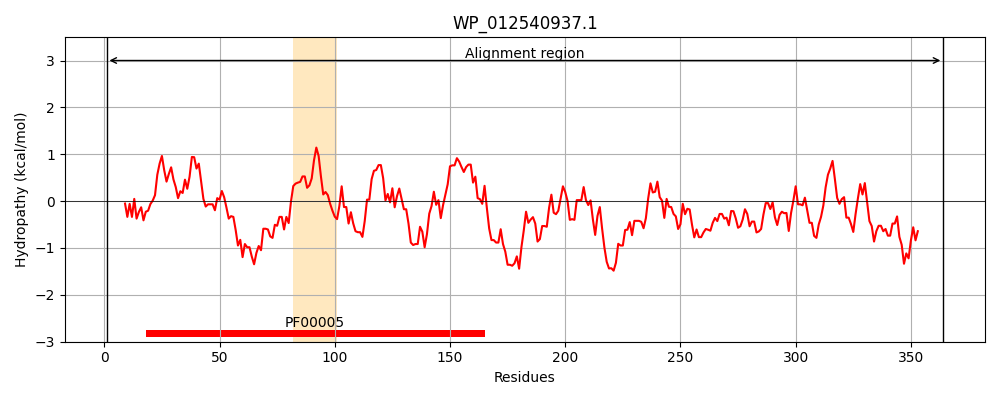
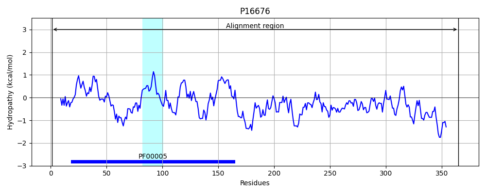
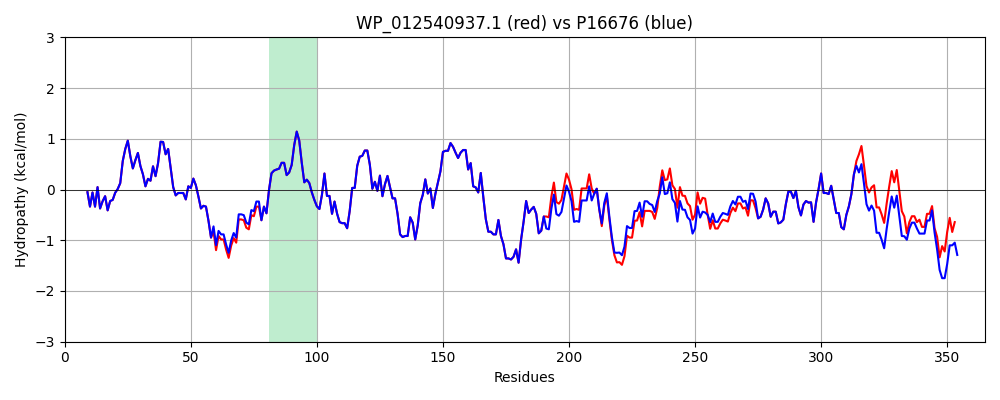

Hit Accession: P16676
Hit TCID: 3.A.1.6.1
Hit Description: gnl|BL_ORD_ID|9228 gnl|TC-DB|P16676|3.A.1.6.1 Sulfate transport ATP-binding protein cysA - Escherichia coli.
Mach Len: 365
e:0.000000
Query TMS Count : 1
Hit TMS Count: 1
TMS-Overlap Score: 1.000000
Predicted Substrates:CHEBI:9335;sulfate, CHEBI:9569;thiosulfate(2-)
BLAST Alignment:
Score: 1775 , Bit scores: 688 bits, E-value: 0.0e+00, Alignment length: 365, Percentage identity: 95
Query: 1 MSIEIANIKKSFGRTQVLNDISLDIPSGQMVALLGPSGSGKTTLLRIIAGLEHQTSGHIRFHGTDVSRMHARDRKVGFVFQHYALFRHMTVFDNIAFGLTVLPRRERPNAAAIKAKVTKLLEMVQLAHLADRYPAQLSGGQKQRVALARALAVEPQILLLDEPFGALDAQVRKELRRWLRQLHEELKFTSVFVTHDQEEALEVADRVVVMSQGNIEQADAPERVWREPSTRFVLEFMGEVNRLQGIIRGGQFHVGAHRWPLGYTPTYQGPVDLFLRPWEVDISRRTSLDSPLPVQVLEASPKGHYTQLVVQPLGWYDEPLSVVLAGDEAPSRGERLFVGLQNARLYNGTERIEPRG-ELALAESA 364
MSIEIANIKKSFGRTQVLNDISLDIPSGQMVALLGPSGSGKTTLLRIIAGLEHQTSGHIRFHGTDVSR+HARDRKVGFVFQHYALFRHMTVFDNIAFGLTVLPRRERPNAAAIKAKVTKLLEMVQLAHLADRYPAQLSGGQKQRVALARALAVEPQILLLDEPFGALDAQVRKELRRWLRQLHEELKFTSVFVTHDQEEA EVADRVVVMSQGNIEQADAP++VWREP+TRFVLEFMGEVNRLQG IRGGQFHVGAHRWPLGYTP YQGPVDLFLRPWEVDISRRTSLDSPLPVQVLEASPKGHYTQLVVQPLGWY+EPL+VV+ GD+AP RGERLFVGLQ+ARLYNG ERIE R ELALA+SA
Sbjct: 1 MSIEIANIKKSFGRTQVLNDISLDIPSGQMVALLGPSGSGKTTLLRIIAGLEHQTSGHIRFHGTDVSRLHARDRKVGFVFQHYALFRHMTVFDNIAFGLTVLPRRERPNAAAIKAKVTKLLEMVQLAHLADRYPAQLSGGQKQRVALARALAVEPQILLLDEPFGALDAQVRKELRRWLRQLHEELKFTSVFVTHDQEEATEVADRVVVMSQGNIEQADAPDQVWREPATRFVLEFMGEVNRLQGTIRGGQFHVGAHRWPLGYTPAYQGPVDLFLRPWEVDISRRTSLDSPLPVQVLEASPKGHYTQLVVQPLGWYNEPLTVVMHGDDAPQRGERLFVGLQHARLYNGDERIETRDEELALAQSA 365 | Protein Hydropathy Plots: |
|---|
|  |  |
Pairwise Alignment-Hydropathy Plot:
|
|---|
|  |